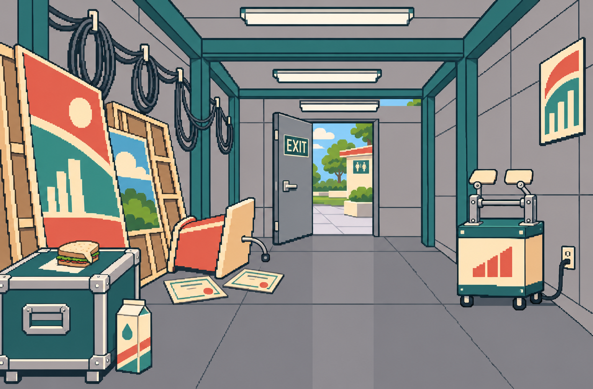
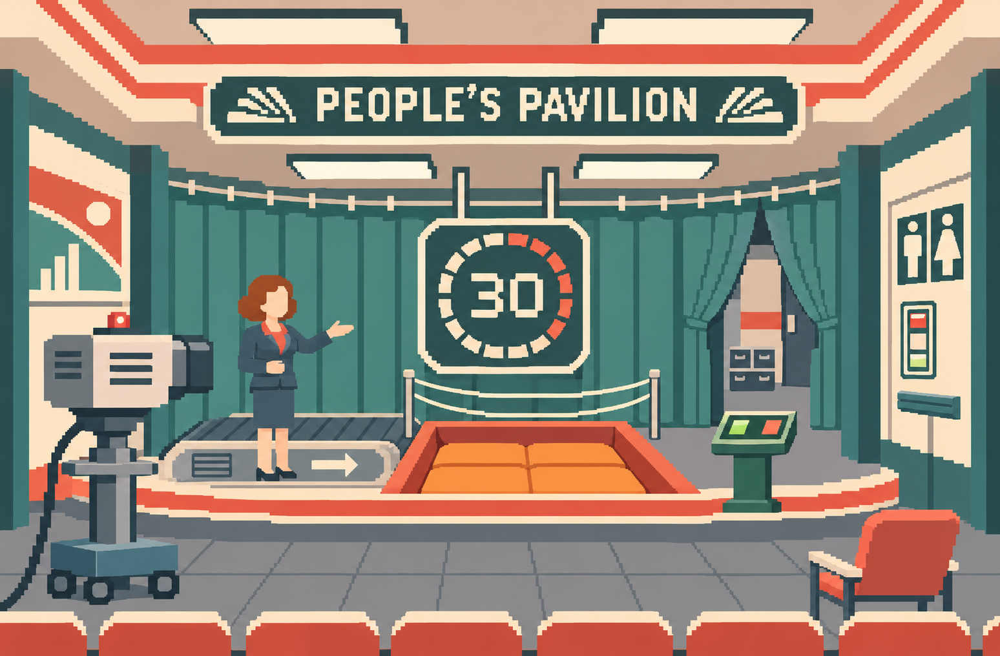

OUT OF ORDER · CHAPTER 3 · TWO-SCENE RECONSTRUCTION PILOT · NOVEMBER 21, 2026
Read the scene from a distance.
Discover the character up close.
Two native-grid interpretations for Nate’s visual evaluation: Backstage and Locomotion Stage. These test stronger clusters, clearer action and less microdetail. Both are GENERATED / UNSELECTED. All current canonical artwork remains approved and unchanged.
This is a candidate review package, not an approval, registry update or production handoff. Paper Emergency is excluded. No narrative, gameplay, engine, Chapter 4 or main-menu work was performed. No public Pages deployment occurred.
Starting main: d9b6b91604b72115c5402253f00924665e957727
Local review branch: art/ch3-native-pilot-20261121
Candidate sources: editable native renderer · Backstage coordinates/layers · Locomotion coordinates/layers · exact built-in imagegen concept prompts
What this pilot can establish
The native renderer begins with an empty 314×206 canvas and draws explicit integer-coordinate shapes using a named palette. It reads no original or generated scene PNG. There is no oversized raster reduction, sharpening, posterization or palette-reduction step. Semantic transparent layers and every drawing operation are preserved. The generated large references are separate, and their native-grid authorship remains unresolved. Reproducible native construction is evidence of the method; it does not prove artistic success or hand-painted authorship.
The result is cleaner and more economical, but also flatter and more geometric than the selected Chapter 2 artwork. Nate’s decision is whether this balance should guide the remaining scenes, needs a more dimensional native pass, or should be rejected. Exact color counts are descriptive; no 64-color limit was imposed.
Backstage GENERATED / UNSELECTED
Reconstructed: Rebuilt the room, floor, beams, scenery, cable loops, crate, sandwich, carton, papers, overturned podium, open exit and attached clapper from explicit native polygons/lines. Concrete uses broad planes rather than stipple. EXIT is a clear native bitmap sign above the doorway; the approved room had its small sign on the door leaf. The clapper retains cabinet, fixed plate, horizontal shaft, rigid supports and cream paddle linkages. It is an attached mechanism, with no face or walking stance.
What remains imperfect: The treatment is deliberately flatter and more diagrammatic than Chapter 2. The plain exit sign was moved to the lintel for legibility, which Nate should assess against the composition lock. Scenery/corridor geography is retained, but precise prop contours and material shadows are reinterpretations. Long carton labels are left to the narration; the sandwich and overturned podium may still need stronger silhouettes. The clapper is mechanically connected but its two paddles remain a silhouette to evaluate for accidental anthropomorphism.
Exact 4× comparison — matching scale, scroll horizontally
Approved: 314×206 · RGB · 25,215 RGB colors · alpha [255, 255]
SHA-256 aa90896023a59454887e9b3bd5b1745cb8b95a5d9737829119abddd9176f4889
Source InterstellarHarvest/CYOA-storyboard@e65f42c19e54f566819289d2b133be246ede13f5
tools/prologue-art-lab/assets/review/chapter-03-batch04-2026-11-20/v03-clapper-correction/candidates/CH3-D05-backstage-v03.png
Candidate: 314×206 · RGB · 45 RGB colors · alpha [255, 255]
SHA-256 6af2ccb3ae86b7fc6ae89f25aa521f9db3e58dc7396e41c067079360493a9b59
candidates/CH3-PILOT-backstage-v01.png
Corrected problem areas — exact 8× crops
Same native crop coordinates in both images; these are analytical enlargements, not additional candidates.
cables · native box (23, 0, 110, 80)
props · native box (0, 104, 145, 205)
clapper · native box (234, 83, 292, 175)
exit · native box (136, 47, 206, 136)
Earlier-chapter craftsmanship comparison
Candidate / Chapter 2 reference at exact 4×
Large conceptual reference — not a native candidate
Built-in imagegen concept; native authorship unresolved · 1548×1016
1548×1016 · RGB · 132,530 RGB colors · alpha [255, 255]
SHA-256 3cde251e50bf3cd11e3a733b81f8ec46d77aed96525401a1abec7032c6104deb. This reference is preserved unchanged. No pixels from it are reduced or imported into the native candidate.
Review: Are the important forms clearer at native size and at 4×? Does the simplified interpretation retain enough depth and personality to belong beside Chapter 2?
Locomotion Stage GENERATED / UNSELECTED
Reconstructed: Rebuilt the ceiling bands, walls, curtain folds, marked room elements, floor, audience seats, camera cart, microphone, timer and console on the native grid. The moving belt is left, the padded pit is center, a cream stationary landing leads behind/right toward the existing opening, and a sparse suspended net spans the pit. The net has three crosswise ropes and four depth strands with corner attachments. The presenter uses auburn hair, coral neckline, slate costume and one broad open-hand gesture; no portrait resampling or individual fingers. PEOPLE'S PAVILION and 30 are preserved semantically with newly drawn native glyphs.
What remains imperfect: The pit and net are a clearer mechanical interpretation, not a verified architectural floor plan. Net contact/height, the narrow stationary landing and console overlap need Nate's spatial reading. The presenter is intentionally economical and less expressive than her portrait; her hand and feet may look stiff. The room is flatter than Chapter 2, curtain lighting is simplified, and new lettering differs in shape from the selected art despite preserving its wording and numeral. No animation demonstrates actual belt movement.
Exact 4× comparison — matching scale, scroll horizontally
Approved: 314×206 · RGB · 16,885 RGB colors · alpha [255, 255]
SHA-256 be99d790754951bcbcd1c26b94a94ff4e84280f5385735951b0f024b322e13c5
Source InterstellarHarvest/CYOA-storyboard@7bf1f426f3a1d5dba14e7a1bd56ece86a4d23bdb
tools/prologue-art-lab/assets/review/chapter-03-batch03-2026-11-19/v04-perspective-corrections/candidates/CH3-C03-locomotion-v04.png
Candidate: 314×206 · RGB · 36 RGB colors · alpha [255, 255]
SHA-256 1c944c9aabc6aa5fd9288dd454fadb49b1d327d0d08a337d59464f65757a36d0
candidates/CH3-PILOT-locomotion-v01.png
Corrected problem areas — exact 8× crops
Same native crop coordinates in both images; these are analytical enlargements, not additional candidates.
machine-and-net · native box (59, 119, 253, 166)
presenter · native box (72, 82, 116, 155)
countdown · native box (126, 66, 191, 124)
Earlier-chapter craftsmanship comparison
Candidate / Chapter 2 reference at exact 4×
Large conceptual reference — not a native candidate
Built-in imagegen concept; native authorship unresolved · 1548×1016
1548×1016 · RGB · 117,735 RGB colors · alpha [255, 255]
SHA-256 764b68f85f0927c70f610ef1ab6195d596d1b6e64010885576a16ed1a197a7ed. This reference is preserved unchanged. No pixels from it are reduced or imported into the native candidate.
Review: Are the important forms clearer at native size and at 4×? Does the simplified interpretation retain enough depth and personality to belong beside Chapter 2?
Color economy and approved references
Counts are exact decoded RGB values on native opaque images. The old versions have many near-unique transitional shades; that history is not itself grounds for rejecting a composition. The new palette was chosen for scene materials, without automatic quantization.
| Image | Dimensions | Unique RGB | Single-use color pixels |
|---|
| Approved Backstage | 314×206 | 25,215 | 26.535% |
| Candidate Backstage | 314×206 | 45 | 0.0% |
| Approved Locomotion Stage | 314×206 | 16,885 | 16.502% |
| Candidate Locomotion Stage | 314×206 | 36 | 0.0% |
| scenes:exposition/reception | 314×206 | 868 | 0.22% |
| scenes:biology_park/conveniences_bureau | 314×206 | 62 | 0.0% |
| scenes:biology_park/control_tower | 314×206 | 64 | 0.002% |
| scenes:biology_park/spore_garden | 314×206 | 64 | 0.0% |
| scenes:biology_park/tour_tram | 314×206 | 64 | 0.0% |
| scenes:biology_park/moving_forest | 314×206 | 64 | 0.0% |
| scenes:biology_park/groundskeeper | 314×206 | 64 | 0.0% |
| scenes:house_of_tomorrow/foyer | 314×206 | 210 | 0.036% |
| scenes:pavilion_reboot/human_verification_stage | 314×206 | 16,172 | 15.645% |
| scenes:pavilion_reboot/urgency_stage | 314×206 | 16,801 | 16.57% |
Reception: scene simplification versus portrait detail
Reception identifies its small figure through hair, headset and cream/teal costume. The detailed 564×278 portrait rewards a closer look. The pilot presenter keeps auburn hair, coral neckline, slate costume and gesture rather than portrait-level facial marks. Reception and all portrait bytes remain unchanged.
scenes:exposition/reception — approved native and exact 4×
SHA-256 fb010301d2df0c06d0cedaff6e35e60661e18764c9e5d9ed755ad78b0ac5fd53
Registered source commit 2b9883bcbbeefee2e871214388b78a57a388ee94
scenes:biology_park/conveniences_bureau — approved native and exact 4×
SHA-256 90e2e936ca828ff429da78d86c5e694b083d7ea5909d56ab26a107ef0a1c9676
Registered source commit 2b9883bcbbeefee2e871214388b78a57a388ee94
scenes:biology_park/control_tower — approved native and exact 4×
SHA-256 fde023d3741641aa0f376ad1ac65508de3aeef84a05a8be0defecb3f4603daca
Registered source commit 2b9883bcbbeefee2e871214388b78a57a388ee94
scenes:biology_park/spore_garden — approved native and exact 4×
scenes:biology_park/spore_garden exact 4× · 1256×824
SHA-256 aded321d36cf2ea9c50d3d696230fe2a1606f181ff8fc0d1f2f7bffb92af4ed3
Registered source commit 2b9883bcbbeefee2e871214388b78a57a388ee94
scenes:biology_park/tour_tram — approved native and exact 4×
scenes:biology_park/tour_tram native · 314×206
scenes:biology_park/tour_tram exact 4× · 1256×824
SHA-256 fd2b01dbff9db37a79b5a1519b0adc5be3ce8e60c425d7bfb039a5a2194f6d57
Registered source commit 2b9883bcbbeefee2e871214388b78a57a388ee94
scenes:biology_park/moving_forest — approved native and exact 4×
SHA-256 5a1f61ab9c8a1c7fac129683df09da9bae48a0f22adb9012d98183e0d10f5c81
Registered source commit 2b9883bcbbeefee2e871214388b78a57a388ee94
scenes:biology_park/groundskeeper — approved native and exact 4×
scenes:biology_park/groundskeeper native · 314×206
SHA-256 5f3ff412dff5b710bfbbe7a33c6f4b4de0ee815208b7854c393b546212371e95
Registered source commit 2b9883bcbbeefee2e871214388b78a57a388ee94
scenes:house_of_tomorrow/foyer — approved native and exact 4×
SHA-256 9e4ea0bc781dbb7cf40d90d71ebce661d244c45bf5892c45ea6e420c9b329607
Registered source commit 2b9883bcbbeefee2e871214388b78a57a388ee94
scenes:pavilion_reboot/human_verification_stage — approved native and exact 4×
SHA-256 8df7e5dd2fffb17449fd43f4d9e7df167d75347efc53b0bde1771fd6d8d001ca
Registered source commit 7bf1f426f3a1d5dba14e7a1bd56ece86a4d23bdb
scenes:pavilion_reboot/urgency_stage — approved native and exact 4×
SHA-256 368134fe2363134d3b63e7a7eae3a7b71b393a9d59484c4b3c456296239a7d2c
Registered source commit 7bf1f426f3a1d5dba14e7a1bd56ece86a4d23bdb
Verification and preservation
The manifest, hashes, dimension/opacity checks, deterministic rebuild and exact nearest-neighbor pixel checks are in image and preservation QA. Every tracked file from the pinned base is checked against the starting commit, including approved PNGs, registries, approval records, earlier packages, narrative and Chapter 4. Full baseline checksums.
Canonical and narrative commands: check-canon, qa-sync, storyboard smoke, Chapter 3 reboot, Chapter 3 briefs, brief preparation --check. Actual exit statuses are in QA results.
Gallery browser checks and screenshots: browser results. Selected-artwork browser regression: run log. No live Pages deployment or gameplay/runtime test is claimed. This package neither loads nor modifies the engine repository.
Pilot decision for Nate: retain this reconstruction approach, request specific native-grid refinements, or reject it before any remaining Chapter 3 scene is commissioned. Both files stay generated/unselected. Selection, registration, integration and public deployment each remain outside this task.